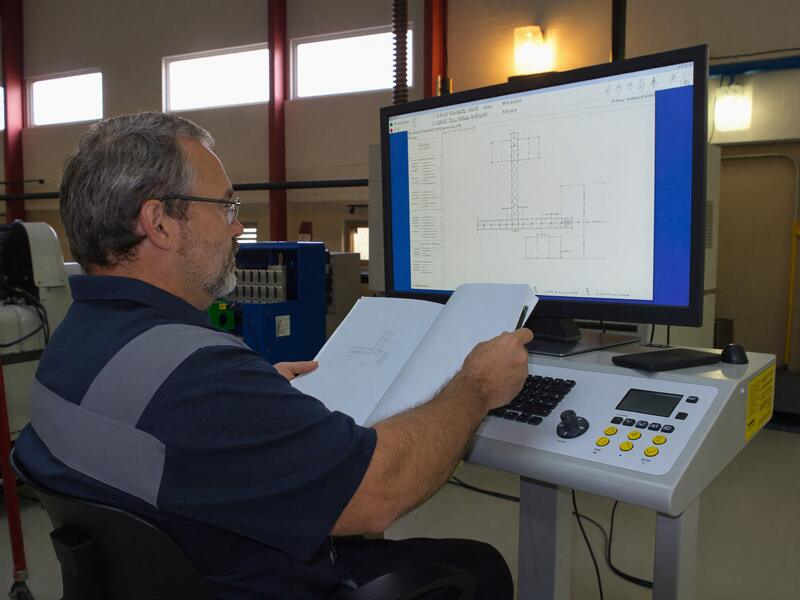

Jobs · Technik & Meister
Technik & Meister: Jobs, die passen.
Ob Techniker, Meister oder Konstrukteur: Sag uns, was du kannst und was du willst. Wir suchen den passenden Job in deiner Nähe.
Diese Berufe suchen wir
Tipp deinen Beruf an, dann geht’s direkt los. Nicht dabei? Im Profil gibt es „Anderer Beruf“.

Darüber sprechen wir am Telefon
Damit nur Jobs kommen, die wirklich passen, fragen wir im Gespräch genauer nach. Zum Beispiel:
- Mit Personalverantwortung oder fachlich?
- Büro, Halle oder beides?
- Mit welchen Programmen arbeitest du – CAD, ERP?
So läuft’s
- 01
Kurzprofil anlegen
Beruf, Erfahrung, Wohnort, Wunschgehalt. Zwei Minuten, kein Anschreiben, kein Lebenslauf.
- 02
Wir gleichen ab
Wir legen dein Profil neben offene Stellen in deiner Nähe: Fahrweg, Schicht, Gehalt, Start.
- 03
Wir rufen dich an
Passt ein Job, sprechen wir zuerst mit dir. Du erfährst, um welchen Betrieb es geht und was er bietet.
- 04
Du entscheidest
Willst du, stellen wir dich vor und machen den Termin mit dem Betrieb aus. Willst du nicht, passiert nichts.
Vertraulich
Dein Profil ist nicht öffentlich. Kein Betrieb erfährt deinen Namen, bevor wir mit dir telefoniert haben und du einverstanden bist.